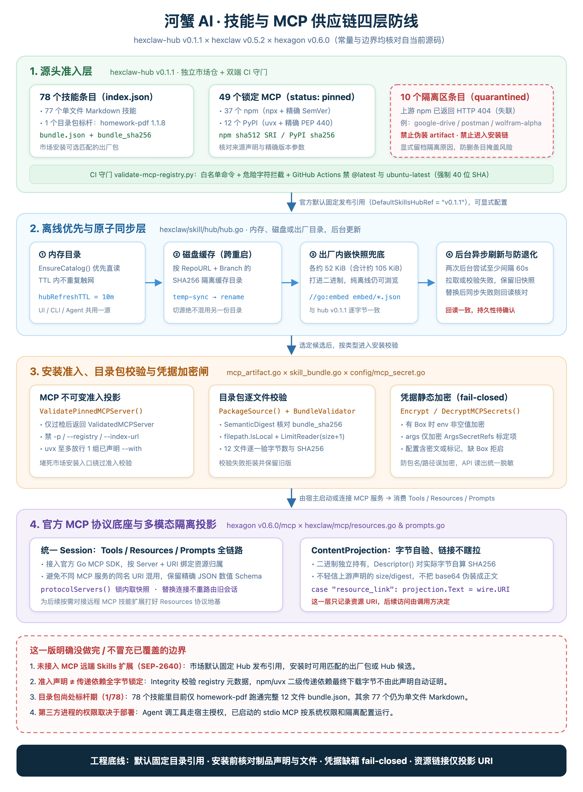
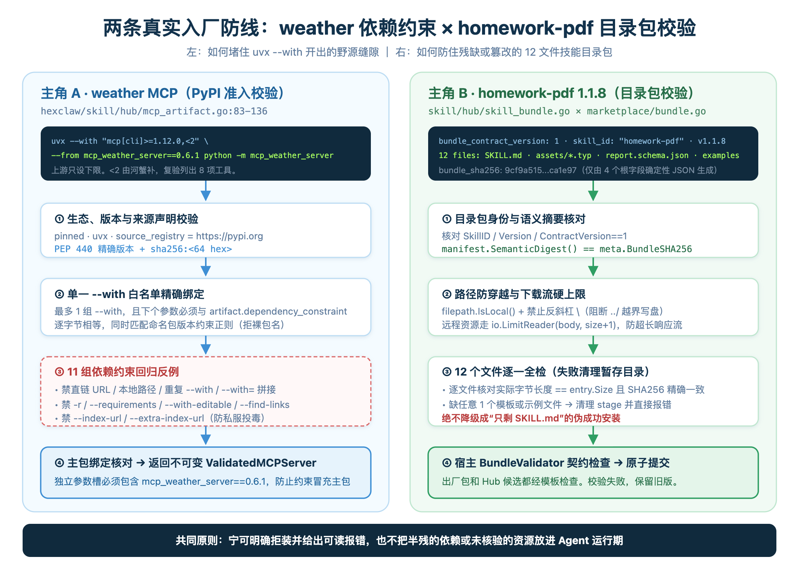

78 技能 × 59 MCP（49 锁 10 隔离）× --with 依赖白名单 × 离线 BOM 与凭据 fail-closed
就在本周二（11 月 24 日），趁着 MCP 两周年纪念周，Anthropic 把 Skills over MCP 推上了公开 Beta。先拆个容易看反的词面：跟 HTTP over TLS 一样，这里的 over 指的是“走 MCP 协议对外分发 Skill”——服务端发布工作流，客户端在用得着的时候，再读 SKILL.md 和配套文件。
翻发布说明时，一个开关细节特别值得琢磨。按 11 月 24 日公告，个人套餐（Pro / Max / Ultra）默认打开，Team 要由管理员启用，Enterprise 当时还待开放。工具开始自带“操作剧本”，接进来之后用哪一版，决定权还在宿主手里。
这道门禁到底多要命，我们在整理河蟹 AI（HexClaw）的 59 个 MCP 市场条目时就撞见过。把条目声明的包名拿去 npm 官方源核对，有 10 个返回 HTTP 404。google-drive、postman、wolfram-alpha、ffmpeg-video-processor 都是当时记录在目录里的名字。想想看，随手给本地 Agent 配个 @latest，下次启动拿到的字节就可能已经换了一版。
接工具本身早就不难了，SDK 封装得越来越顺手；真正难的，是在能力市场越滚越大之后，不让你的 Agent 穿着隐身衣在各种“野包”和浮动脚本里裸奔。
本文核心判断：
1. Skills over MCP 把审查范围从工具描述扩到了远端剧本。带静态清单的技能要核对文件摘要。宿主还得决定采用哪一版剧本，本地依赖从哪里来则要看安装链。
2. 本地市场的准入校验必须焊进类型系统和 CI 双端。HexClaw 市场里，49 个已锁版 MCP 条目记录了精确版本、官方 registry 的来源声明和哈希元数据。10 个条目因包名查询返回 404 被列入 quarantined。PyPI 每条最多放行一组已声明的 --with，技能目录包按清单逐一核对 12 个文件。
3. 发布引用和离线快照，让桌面端知道手里是哪一版目录。准入校验能查主包版本和声明，包管理器实际下载了哪个制品、解析到了哪些传递依赖，得看那一次的安装记录。
30 秒版：
本文对照 Anthropic 的 Skills over MCP（SEP-2640）扩展，拆解 HexClaw（
hexclaw-hub v0.1.1+hexclaw v0.5.2+hexagon v0.6.0）如何用三组真实对象跑通供应链防线：10 个因 404 隔离的 MCP 条目、weather的 PyPI--with单条依赖约束，以及homework-pdf 1.1.8的 12 文件 SHA256 目录包；再收束到离线目录刷新、凭据箱 fail-closed 与底层 MCP Resources/Prompts 多模态隔离。同时明确交代：河蟹市场默认固定到 Hub 发布 Tag，尚未接入 MCP 的远端 Skills 扩展（skills/list等）。
Skills over MCP 落地后，信任面到底宽在了哪？
把最近一个月的行业时间线连起来看，方向很清晰。2026 年 10 月 22 日，Linux 基金会旗下的 Agentic AI Foundation（AAIF）正式把 Agent Skills 纳入治理，和 MCP 放进了同一套开放标准版图；紧接着 11 月 24 日，Anthropic 推出 Skills over MCP（规范编号 SEP-2640，io.modelcontextprotocol/skills），联合 Shopify、HubSpot、Atlassian 等首批生态服务，在 Claude 和 Claude Code（2.1.331+）公开测试。
这套设计瞄准的是一个真实痛点。早期的 MCP 接入特别像给你丢了一箱螺丝刀却没给装配图：有些客户端一次把几十个工具的 JSON Schema 全倒进上下文，既烧 Token 又容易让模型迷失在参数细节里。Skills over MCP 的解法很克制——客户端先通过轻量元数据接口（skills/list、skills/get）看到有哪些可用技能，真正干活碰到相关任务时，再借 MCP 既有的 Resources 原语按需把 SKILL.md 和配套文件读进来，服务端可以更新剧本，客户端发现新版后再按宿主的核对和批准规则加载。行业里管这种做法叫渐进披露（Progressive Disclosure），没用到的技能正文也就不用占上下文。
问题出在硬币的另一面。2025 年 4 月，安全研究团队 Invariant Labs 披露过 MCP Tool Poisoning（工具投毒）和 Rug-Pull（抽地毯）。当时要审的就是工具描述及其变化。现在工具旁边多了一份剧本，宿主要审的内容也扩大到了技能正文和配套文件。
公平地说，Anthropic 自己也没放任裸奔。按 SEP-2640，带静态清单的技能会列出文件 URI、字节数和 SHA-256。遇到动态资源，先前的批准不能覆盖以后任意生成的文件。Claude Code 在 Manual 和 acceptEdits 模式下提供 Allow this version，让批准跟着那一版文件走。auto 模式则由分类器判断是否加载。Claude Code 会跳过远端 MCP Skill 的内联 shell 命令。v2.1.332 加入的 PreSkillShellCommand 钩子用于即将执行的内联命令。至于本机怎么装第三方 MCP、断网时目录还能不能看、密码怎么落盘，仍得看宿主自己的实现。
这也是为什么我们在河蟹 AI 上做技能和 MCP 市场时，把默认目录引用固定在发布版本上。两套方案在“目录包封装、正文按需载入”上思路同向，但在谁掌握变更节奏、防线焊在哪一层上，差别很清晰：
技能承载形态
Anthropic Skills over MCP（SEP-2640 远端发布）：MCP 服务端托管 SKILL.md 及其配套文件，经 MCP Resources 按需读入
HexClaw 当前架构（市场目录与本地安装）：独立市场仓 hexclaw-hub 托管单文件与目录包（bundle.json），目录包安装时从出厂包或 Hub 选取候选
更新控制权
Anthropic Skills over MCP（SEP-2640 远端发布）：客户端发现新版后按需读取。静态清单提供逐文件 SHA-256，文件变化会使该版本的已保存批准失效。
HexClaw 当前架构（市场目录与本地安装）：官方默认固定到 Hub 发布 Tag v0.1.1。显式配置可指定其他来源或引用。
防漂移与防断网
Anthropic Skills over MCP（SEP-2640 远端发布）：读取新文件时访问远端。已核对的内容可按宿主规则缓存，手工保存的批准绑定这一版文件清单。
HexClaw 当前架构（市场目录与本地安装）：目录包安装时逐文件核对长度和 SHA-256。两份各约 52 KiB 的快照随二进制出厂，离线仍可浏览目录。
治理边界与代价
Anthropic Skills over MCP（SEP-2640 远端发布）：团队由管理员启用。auto 模式由分类器判断是否加载，工具调用仍按各自的权限策略处理。
HexClaw 当前架构（市场目录与本地安装）：官方默认目录随发布更新引用和内嵌快照。已启用的技能要等新版安装完成、运行时刷新成功后才用得上。
对一款跑在用户自己电脑上的桌面 Agent 来说，我更愿意把默认目录固定到发布版本上。这样回头查“今天装的是哪一版”，有目录和摘要可核对。下面按数据流顺序，拆开河蟹 AI 这套从市场准入、安装校验、离线同步到协议底座的四层防线。
第一道闸：59 个 MCP 里，为什么 49 个上锁、10 个进隔离区？
把 59 个 MCP 条目摊开看，结构一点都不神秘：49 个处于 pinned 状态（37 个走 npx 的 npm 包 + 12 个走 uvx 的 PyPI 包），另外 10 个躺在 quarantined 隔离区里。翻一下 hexclaw-hub/mcp-registry.json，这 10 个隔离条目的 quarantine_reason 清一色写着 declared npm package returned HTTP 404，整齐得让人笑不出来。
为什么不干脆把这 10 条从 JSON 里删掉图个清净？道理很简单：如果你悄悄删掉，过两个月整理榜单时很可能又把同名仓库抄回来，顺手再踩一遍 404 或更糟的抢注包。显式保留条目、标上 status: "quarantined"，同时用校验脚本硬规定“隔离条目不得携带 artifact，绝不能伪装成已核验包”，等于在市场清单里给自己钉了一块墓碑，时刻提醒后来者这块地塌过。
光靠市场仓库里的 Python 脚本拦还不够，Go 客户端运行期必须有第二道锁。在 hexclaw/skill/hub/mcp_artifact.go 里，我们用了一个典型的类型边界技巧——把原始的 McpServerMeta 包装成内部字段不可导出的 ValidatedMCPServer。所有从市场安装 MCP 的入口（目录校验、CLI、API、资源生命周期与内置安装技能）都必须先过 ValidatePinnedMCPServer 拿到这个只读投影，再组装成运行时通用 mcp.ServerConfig（手工配置自定义 MCP 另走通用入口，不绕市场锁版通道）：
看细一点，npm 条目必须同时满足五件事才放行：启动命令是 npx；版本号命中精确 SemVer 正则（拒绝 ^、~ 和 latest，比如 @modelcontextprotocol/server-filesystem@2026.7.10 和 @modelcontextprotocol/server-github@2025.4.8）；source_registry 钉死在 https://registry.npmjs.org；integrity 经 base64 解码后恰好是 64 字节 sha512- SRI；且最终传给子进程的 Args 数组里必须原样出现 package@version，顺手把 -p、--package、--registry 全部拦死。这里核的是目录里的制品声明和启动参数。
这套纪律还顺手管到了市场仓库自己头上。hexclaw-hub/scripts/validate-mcp-registry.py 的文件头就记着一笔历史旧账：早期凭证注入契约全靠人工维护，Redis 错写成 env、MongoDB 和 MySQL 的环境变量名写错、SQLite 甚至一度指向已下架的 npm 包（现已迁到 PyPI 锁死为 mcp-server-sqlite==2025.4.25）。现在这个脚本把三类门禁一起钉死在 CI 里：lines 101–172 逐条核验 59 个 MCP 的命令白名单、shell 危险字符、精确版本与哈希元数据；lines 206–252 专门给踩过坑的 5 个数据库代表服务（sqlite、mysql、redis、mongodb、postgres）补上了凭据与启动参数回归断言；lines 82–98 顺带把仓库里的 GitHub Actions workflow 也全扫了一遍——引用外部 Action 必须写成 40 位 commit SHA，跑道禁止 ubuntu-latest，脚本里禁止 go install ...@latest。管别人之前先管住自己的构建流水线，才不至于前门上锁、后院敞开。

（图 1：河蟹 AI 技能与 MCP 供应链四层防线与未覆盖边界全景）
锁版本最难的不是主包，是 --with 开出来的那条缝
纸面上把主包锁死很容易，真跑进 Python 生态，第一个现实冲突马上就冒头了。主角是市场里那个看起来最无害的天气服务 weather。
我们把主包死死钉在 mcp_weather_server==0.6.1。PyPI 上游只给 SDK 写了下限 mcp[cli]>=1.12.0。11 月 1 日的 Linux 验收里，包管理器解析到了 SDK 2.3.0，启动时导入 McpError 报了 ImportError。河蟹给这个市场条目额外补上 <2，通过 --with 传给 uvx，原有主包版本照旧。启动命令是 uvx --with "mcp[cli]>=1.12.0,<2" --from mcp_weather_server==0.6.1 python -m mcp_weather_server。11 月 2 日从应用安装接口复验，客户端列出了 8 项工具，业务调用 0 次。
这道题立刻成了一个工程两难。一刀切掉 --with，这个安装入口就没法给天气服务带上兼容约束。什么额外依赖都放进来，主包锁得再死也架不住多开一道门。
我们的取舍是只开一条精确声明过的单通道，不给通用验证器硬编码天气特例。我们在 MCPArtifact 里新增了一个可选标量字段 dependency_constraint，并在 mcp_artifact.go 和市场 CI 校验脚本里都核对声明、参数和值是否一一对应：
看细一点，里面藏着一个很容易被忽略的兜底：第 103 行专门把 constraintArgument = i + 1 记了下来，到了后面核对主包参数（line 123）时，特意跳过这个下标（i != constraintArgument）。不然有人写出 uvx --with mcp_weather_server==0.6.1 python，把主包塞进约束位里去跑任意解释器命令，朴素的字符串包含检查就会被骗过去。市场脚本 validate-mcp-registry.py:181-196 用 11 组负例把未声明、重复 --with、直链 URL、本地路径、缺版本号的裸包名、--with= 拼接、私服索引和主包错位全钉死了。
但话说回来，做到这一步就等于彻底安全了吗？绝不是。在 hexclaw/skill/hub/hub.go:42-45 的结构注释里，我们自己就把大实话写死了：Integrity 是官方 registry 原生准入元数据，它不证明包管理器最终拉回的全部传递依赖字节，也不是“该包绝对可信安全”的背书。mcp[cli]>=1.12.0,<2 只是把直接依赖框在一个兼容区间里，二三级传递依赖的解析权仍在 uvx / npx 手里。清楚这条边界，比假装做了全链路 lockfile 重要得多。
从单文件到目录包：78 个技能里唯一的 homework-pdf 怎么做防篡改？
聊完 59 个 MCP，再看 78 个技能。这 78 条里（包含按河蟹场景改写、单独留档来源说明的公开社区条目），77 个目前还是单文件 Markdown，唯独 homework-pdf 1.1.8 已经进化成了多文件目录包。它沿用 Agent Skills 的 SKILL.md 加配套文件的形式，再由河蟹的 bundle.json 描述整包。
原因很现实：要让 Agent 稳定输出一份出版级的作业讲解 PDF，光靠几百字 Markdown 提示词根本稳不住版式和字段契约。打开 hexclaw-hub/skills/homework-pdf/bundle.json，里面一共列了 12 个文件：主指令 SKILL.md、3 个 Typst 排版模板（含和通用文档共享的页眉页脚 assets/pdf-chrome.typ）、1 份输入输出 JSON Schema（assets/report.schema.json）、1 份 profile、4 个示例文件、1 份契约参考文档和 1 份 LICENSE。它的 SKILL.md（lines 44–46）把职责边界划得很死：Typst 组件只管排版，不自行识题、下载资源、安装依赖或调用模型；目录里放着文件，也不代表模板已经进入运行系统，是否生效要走宿主的共享 Skill 生命周期和能力回执。
可一旦技能从 1 个文件变成 12 个文件，安装链就多了几件事要管。文件下没下全？清单给出的路径能不能用？上游响应的长度跟清单对得上吗？走 Hub 下载时，PackageSource 把这些检查放进候选包的暂存阶段。
这里有两个小细节值得提一下。第一，直接对 bundle.json 原文算哈希容易被换行符和缩进空格误伤，所以 SemanticDigest()（skill/marketplace/bundle.go:60）抽了四个固定根字段，按确定性 JSON 重新编码再算 SHA256——这样 Windows 和 macOS 的换行差异不会误杀合法包，可只要任意一个文件的路径、角色、字节数或哈希变了一位，摘要立刻失配。第二，读远端文件时上限设的是 entry.Size + 1：如果只读 entry.Size 字节，响应多出的尾巴会被悄悄截掉；多读 1 个字节，只要上游多吐了数据，int64(len(data)) != entry.Size 当场抓住。
装这份 PDF 技能时，InstallFromCatalog 可以选匹配的出厂包，也可以从 Hub 取候选包。两条路都进入 Marketplace.Install，逐文件核对通过之后，再由宿主注册的 BundleValidator 检查模板和当前引擎的契约。校验没过就留着旧版，候选下载失败也会清理临时目录。依赖排序是另一条流程，InstallWithDependencies 做完 DFS 环检后，逐项调用写入单个 Markdown 的 Hub.Install。

（图 2：两条真实入厂防线——weather PyPI 约束拦截 × homework-pdf 12 文件逐项校验）
离线 BOM、凭据箱与协议底座：把“能装”走成“断网稳、凭据密、链接不瞎拉”
把单个包和单个目录锁住之后，还有三个最容易被忽视的系统边界：目录怎么同步、密码怎么存、协议回来带的多媒体和链接怎么处理。
先说目录同步和离线 BOM。在 hexclaw/config/defaults.go:4 里，默认市场引用固定为 const DefaultSkillsHubRef = "v0.1.1"。显式配置可覆盖这个默认引用。配套的 skill/hub/embed.go 直接用 //go:embed 把 index.json 和 mcp-registry.json 两份各约 52 KiB（合计约 105 KiB）的出厂快照打进二进制（经逐字节校验，与 hexclaw-hub v0.1.1 完全一致）。
平时打开市场，内存里有目录就先读内存。内存还空着，默认远端市场读不早于出厂快照的磁盘缓存，否则用内嵌目录。磁盘缓存按仓库地址和引用分目录。目录够新的 10 分钟里，后台会跳过拉取。相邻两次后台尝试至少间隔 60 秒，从上一次开始尝试时计算，同一时刻最多跑一个后台刷新任务。
刷新阶段我们专门防了两类脏状态。只拉到了 index.json，mcp-registry.json 没到，本次返回 RefreshDegradedError，旧目录接着用。同一来源有可比较的快照时，较旧的候选报 RefreshStaleError。内容不同但时间戳相同，或内容不同且缺时间戳，报 RefreshUnorderedError。落盘时，POSIX 先写并 fsync 临时文件，再 rename 到正式路径，最后同步父目录。Windows 的替换使用 MOVEFILE_WRITE_THROUGH。如果 POSIX 父目录同步报错，代码会回读。回读与候选一致时，新快照已经生效，返回 CacheCommitOutcomeError 报告落盘持久性待确认。
再说本地凭据箱。很多 MCP（比如 MySQL、MongoDB、GitHub、Linear）离不开密码和 Token，早期不少客户端直接把它们明文塞进配置文件，或者一股脑把整个 args 数组全加密——结果把合法的数据库路径也加成了密文。在 hexclaw/config/mcp_secret.go:66-144 里，凭据分两条轨：有密钥箱（secret.Box）时，env 的非空值加密落盘，args 只加密被 ArgsSecretRefs 显式标定下标的敏感参数。只要配置带了 ArgsSecretRefs / EnvSecretRefs 元数据，写入路径 EncryptMCPSecrets 缺密钥箱直接拒写；启动解密 DecryptMCPSecrets 遇到任意密文或元数据同样 fail-closed 报错拒绝继续，绝不把一串 enc:v1:... 密文原样透传给子进程（仅对无 secret metadata 的旧版 MCP 配置在无密钥箱写盘时保留明文兼容边界）。
最后看底层 MCP 协议底座。Anthropic 的 Skills over MCP 之所以能落地，前提是客户端完整支持 MCP 的 Resources 原语而不只是 Tools。在 hexagon v0.6.0 和 hexclaw v0.5.2 里，我们把官方 Go MCP SDK 的 Tools / Resources / Prompts 三类会话全打通了（见 hexclaw/mcp/resources.go 与 prompts.go），每条资源显式绑定 Server + URI 避免多服务撞名。
更关键的是多模态返回值的隔离处理。在 hexagon/mcp/content_projection.go 里，协议返回的图片、音频和二进制嵌入资源会直接剥离到独立的 BinaryContent，省得几百 KB 的 base64 文本把模型上下文糊死；Descriptor() 再对实际收到的字节重算一遍大小和 SHA256，不轻信上游声明。而遇到 resource_link 时，源码直接定死了一条红线：
链接不瞎拉，听起来像个不起眼的细节。resource_link 到这一层就只作为 URI 放进返回内容。后续要不要访问、用什么权限访问，得由实际调用的那一层另作决定。
诚实写一下：这一版的边界
防线列完，该把这一版明确没做完、或者这种架构本身挡不住的地方摊开说明白，免得你误判它的防护上限：
- 尚未接入 MCP 的远端 Skills 扩展（SEP-2640）。河蟹市场默认固定 Hub 的发布引用，已接通的 Resources 和 Prompts 是后续对接的基础。接入后如何发现新版、核对清单、批准加载，还要在宿主侧落实。
- 目录里的
Integrity和dependency_constraint是准入声明，不等于锁死了所有传递依赖的最终字节——npm / PyPI 下游二三级依赖由本机npx/uvx解析，运行期安装器是否逐字节复核下载包体属于独立执行边界，不能仅由元数据存在就当作已经核对了实际下载的字节； - 78 个技能里目录包目前只有 1 个标杆样本（
homework-pdf 1.1.8）——其余 77 个仍为单文件 Markdown；目录包逐文件校验和宿主兼容检查链路已经跑通，但生态规模远未铺满； - 锁版本和隔离负责市场准入。Agent 的工具调用由宿主按权限规则处理。已启动的 stdio MCP 是宿主子进程，读写文件和出网时遵循实际部署的系统权限与隔离配置。
- 出厂快照和缓存能让目录离线可看，不是离线跑完所有第三方 MCP——首次启用需要
npx或uvx拉包的外部 MCP 时，仍依赖本机包管理器缓存或连通官方 registry。
接下来的顺序也比较清楚：先继续观察 MCP 官方 Skills 扩展的规格演进，如果要接入远端技能拉取，前提一定是补齐内容哈希钉死和变更前人工确认，绝不静默热更；同时把更多带模板、脚本和 Schema 的重型技能迁进 bundle.json 目录包体系，并评估对高频 MCP 提供更完整的本地锁文件与下载校验。
回到那 10 个 404 的包：接工具很容易，守住信任边界才见真章
回头看那 10 个躺在隔离区里的 404 条目，还有为了兼容 SDK 差点把门锁撕开一道口的 weather 服务，很多安全隐患远没到零日漏洞的级别，就是在“先跑起来再说”的时候顺手写下的一句 @latest。工具开始自带剧本之后，Agent 还得弄清自己用的是哪一版工作流。默认市场引用固定到发布 Tag，制品声明和目录包各有校验，这几道锁看着笨，却是敢把本地机器交给 Agent 干活的底气。
工具越容易装，野包越容易混进来；
在 Agent 替你动手之前，
先替它把版本锁、隔离区和摘要核对焊牢。
往期 · 河蟹 AI 系列
▸ 河蟹 AI 的 Harness Engineering：“赛博牛马”的聪明是模型给的，敢让它干活的底气是“马具”给的
运行时马具篇（对应本文下游执行层——市场准入之后的权限硬闸与风险裁判）
▸ 河蟹 AI 的 Prompt Engineering：人人都说它死了，其实它沉下去，成了 Agent 最底层的协议
指令协议栈篇（对应本文 Skills 剧本层——SOUL、Skill 与工具 Schema 如何分层组装）
▸ 我把前 leader 蒸馏成了河蟹 AI Skill （附 Skill 蒸馏教程）
单文件 Skill 实战篇（对应本文目录包前传——如何从零编写一份可复用的 Markdown Skill）
▸ 河蟹 AI 的 Test-Time Compute：复合式 Agent 是如何用“生成-验证对偶”终结幻觉的？
推理期确定性验证篇（对应本文“不轻信口头声明、只认机器回执”的同一套工程纪律）
参考来源
- Anthropic 11 月 24 日公测公告、MCP SEP-2640 与 Skills 扩展规范、Claude Code 的开通与批准规则（2026-11-27 核对）。
https://claude.com/resources/articles/skills-over-mcp-tasks-and-more
https://modelcontextprotocol.io/seps/2640-skills-extension
https://modelcontextprotocol.io/extensions/skills/overview
https://code.claude.com/docs/en/mcp#use-skills-from-mcp-servers
https://code.claude.com/docs/en/skills#skills-from-mcp-servers
https://github.com/anthropics/claude-code/releases/tag/v2.1.332 - Linux Foundation / Agentic AI Foundation (AAIF), Agent Skills 加入 AAIF 开放治理公告（2026-10-22 发布，2026-11-26 核对）。
https://aaif.io/news/agentic-ai-foundation-announces-four-new-projects - Invariant Labs, MCP Security Notification: Tool Poisoning Attacks & Rug Pulls（2025-04 披露，2026-11-26 核对）。
https://invariantlabs.ai/blog/mcp-security-notification-tool-poisoning-attacks - HexClaw 开源仓库源码核验：hexclaw-hub v0.1.1（
index.json、mcp-registry.json、skills/homework-pdf/bundle.json、scripts/validate-mcp-registry.py）、hexclaw v0.5.2（skill/hub/mcp_artifact.go、skill_bundle.go、hub.go、cache_commit_posix.go、cache_commit_windows.go、embed.go、dependency.go、config/defaults.go、config/mcp_secret.go、mcp/resources.go）与 hexagon v0.6.0（mcp/content_projection.go）。
https://github.com/hexagon-codes/hexclaw-hub/tree/v0.1.1
https://github.com/hexagon-codes/hexclaw/tree/v0.5.2
https://github.com/hexagon-codes/hexagon/tree/v0.6.0 - weather 0.6.1 的上游依赖声明与河蟹 Hub 的兼容约束。启动和工具发现结果取自 11 月 1 日、2 日留存的 Linux 验收记录。
https://pypi.org/pypi/mcp-weather-server/0.6.1/json
https://github.com/hexagon-codes/hexclaw-hub/commit/0ad952985b26ce050d3b1875ec9d89f663f1a79e - RFC 4949 的数字签名定义。
https://www.rfc-editor.org/rfc/rfc4949.html#page-104
源码与目录数据于 2026-11-26 初核、2026-11-27 复核对应正式 Tag 快照（hexclaw v0.5.2、hexagon v0.6.0、hexclaw-hub v0.1.1）。